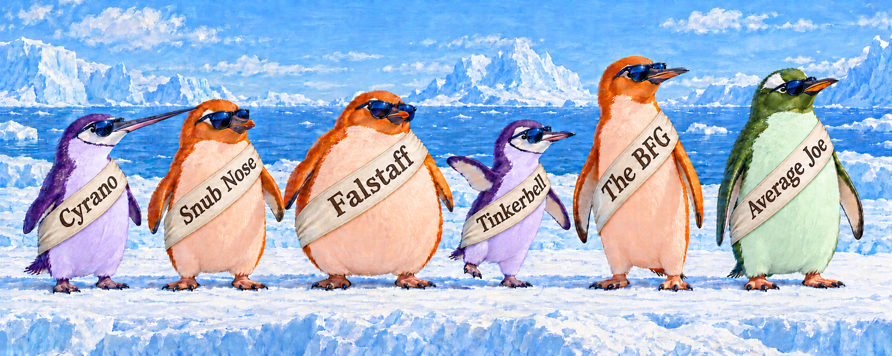

Who are the unusual penguins, what makes each one unusual, and do their nicknames fit?
Vis-MLM
R
multivariate
penguins
Six Palmer penguins with nicknames, from Cara Thompson’s useR! poster and my book. Re-expressing the measures as bill shape and stoutness shows what makes each bird stand out, and whether its name fits
Author
Michael Friendly
Published
October 25, 2026

Six Palmer penguins, wearing their names at last. Each is drawn to caricature what makes it unusual: Cyrano’s long bill, Snub Nose’s short, deep one (call him Socrates, after history’s most famous snub nose), Falstaff’s girth, Tinkerbell’s slight build, the BFG’s long flippers, and Average Joe, who is just a big Gentoo. Image generated by ChatGPT, from the author’s description of the six birds and their measurements; see About the banner at the end.
Overheard at Biscoe Point
“Hey Bro, have you noticed? All these scientists measured us up the wazoo, published papers, and now our data is famous. They use us to teach statistics and data graphics all over the world. But sadly, they don’t even know our names, even with those tags on our flippers.”
“And why didn’t they bother to give us the Big Five personality scales? Those orange Adélies are often narcissistic extroverts, not very open to experience. I’m a proud, average Joe Gentoo. Let’s teach them a thing or two.”
They have a point. It’s also an interesting data-analysis challenge. The Palmer penguins are identified only by numbers: their row numbers in a data frame. Even those aren’t stable. They depend on whether the few birds with missing measurements were dropped: Cyrano, whom you’ll meet shortly, is number 294 in palmerpenguins::penguins and number 283 in heplots::peng. The original data, palmerpenguins::penguins_raw, does record an Individual ID for each bird (Cyrano is N71A2), but those codes are recycled: the 344 birds share just 190 of them. And they were dropped from the simplified data frames everyone uses, so our penguin friends never got rownames().
Sorry
This post can stand as a public apology from the R community. It’s my attempt to right this injustice to the 344 birds on Biscoe, Dream and Torgersen islands near Palmer Station who allowed themselves to be measured for science from 2007 to 2009.
Hey, guys: I understand your pain. I hope you don’t mind my human, literary, historical references I’ve used to give you names.
As it turns out, a few of them do have names. Cara Thompson named four: Cyrano, the BFG, Tinkerbell and Average Joe. I borrowed Cyrano for my book, and added a Hook Nose of my own. This post renames him, and names one more. So the questions for this post are: what makes each of these birds unusual, and do their names fit?
I first got to know the Palmer penguins when I found that they made good examples for methods of multivariate data visualization. I adopted them as a running example in my book, Visualizing Multivariate Data and Models in R, where they turn up in nearly every chapter.
Three noteworthy birds
In Chapter 4, I went looking for multivariate outliers. As in the Bob Marley song, I found “three little birds, pitch by my doorstep.” As I hope to say to my Palmer friends, “Don’t worry about a thing, ’cause every little thing gonna be all right.”
The first tool I usually use to identify possible outliers in multivariate data is a heplots::cqplot(), which shows the squared Mahalanobis distance, \(D^2\), of each bird from the centroid of all four measures (bill length and depth, flipper length, body mass), taking their variances and correlations into account, plotted against their \(\chi^2\) quantiles in a multivariate normal distribution.
Three birds came out on top: cases 283, 10 and 35. The chi-square QQ plot showed that only one of them, 283, falls outside the 95% envelope. The other two are just the most unusual of an ordinary lot.
Figure 1: Chi-square QQ plot of the penguins’ squared Mahalanobis distances on the four measures, with a 95% confidence envelope. Only case 283 lies outside it.
Plotting bill length against bill depth with those three labeled, two of them looked odd for their species. Case 283, a Chinstrap, has a remarkably long bill, so I called her “Cyrano”, after the long-nosed hero of Edmond Rostand’s play. Case 10, an Adélie with a short, deep bill, became “Hook Nose”. Case 35 looked unremarkable in that view and stayed nameless until today.
Figure 2: Bill length against bill depth, with 95% data ellipses and regression lines for each species. The three birds with the largest \(D^2\) are labeled.
The names stuck, at least for me. Cyrano reappears throughout the book: dancing around the edges of a grand tour, at the extreme ends of a biplot, as the most influential case in a multivariate linear model, and finally getting a weight of zero in a robust fit. Using heplots::robmlm() I could just say, “Bye-bye Cyrano—it’s been fun—but we can get along nicely without you.” That is the point of a name: a reader can follow Cyrano from chapter to chapter in a way they can’t follow “case 283”.
Where “Cyrano” came from
I thought I had made up the name. It turns out I hadn’t. I’d seen it in Cara Thompson’s poster for useR! 2022, Level Up Your Labels: Tips and Tricks for Annotating Plots, filed it away, and forgotten where it came from. My code for the book still had a comment, # From Cara Thompson, above her lines that picked out the birds (with her name misspelled, which didn’t help).
Her poster image is a wonderful lesson in plot annotation. Its plot, titled “Perfectly proportional penguins—with a few exceptions!”, shows flipper length against bill length, and replaces a legend and a lot of explanation with a few well-placed text boxes. Four birds get names and a sentence each:
The BFG: “Sitting comfortably within the cluster of Gentoos, this Adelie penguin defies the predictions of his species on both flipper length and bill length.”
Tinkerbell: “The smallest penguin in the set defies the odds on weight for her species and flipper and bill length.”
Average Joes: “The Gentoos tend to stick to their trend, with very few outliers. Heavier penguins have longer flippers and longer bills.”
Cyrano: “With an exceptionally long bill and the shortest flippers bar one among the Chinstraps, this little guy is sure to stand out!”
Did she really pick these birds by eye, from one plot? As we’ll see, every one of her descriptions holds up, except perhaps “little guy”: Cyrano is a female.
Who gets a label?
Thompson’s poster had a second effect on me. In her plot, and in mine in the book, the labeled birds were chosen by hand, and the labels were added by a small piece of ggplot2 plumbing: compute something, make a logical variable for the cases to label, then add a geom_text() layer for just those rows. It works, but you have to do it again for every plot.
Base R graphics handle this better than ggplot2, thanks to the car package. Nearly every plotting function in car takes an argument like id = list(n = 3, method = "mahal"), and labels the 3 points furthest from the centroid, with no further work. The method can be "x", "y", "r" for residuals, or a vector such as Cook’s distances. Labeling unusual points becomes a decision about which criterion, not a chore.
I pulled that selection logic out into a function, heplots::noteworthy(), which takes x, y, n and a method, and returns the row numbers of the points to label. The criterion needn’t come from the two variables on the axes. You can supply a computed vector of criteria values. Here it finds the book’s three birds, using \(D^2\) on all four measures, for a plot of just two:
Code
noteworthy(peng$bill_length, peng$flipper_length, n =3, method = DSQ)
#> [1] 283 10 35
That isn’t what Thompson would have found with a formula. The default, method = "mahal", on the two variables in her plot picks out a different set:
Code
noteworthy(peng$bill_length, peng$flipper_length, n =6, method ="mahal")
#> [1] 283 179 314 272 329 297
Cyrano (283) is first again, but the rest (179, 314, 272, …) are birds on the edges of the overall cloud, which spans three species. None of the BFG, Tinkerbell or Average Joe is on that list. Her eye was doing something the formula wasn’t: judging each bird against its own species. I’ll come back to that.
The next step was to make this a ggplot2 layer, stat_noteworthy(), so that any plot could say which points to label in the same vocabulary. With help from the ggplot2 extenders club, I got a working version. Getting it generally right turned out to be harder:
With groups, should it pick the \(n\) most unusual points overall, or \(n\) in each group? The usual ggplot2 habit is per group. A statistician usually wants the most unusual points in the plot as a whole. Both are reasonable, so it should probably be an option.
With facets, the selection should be done separately in each panel.
Higher dimensions: the penguins’ case is the hardest. The criterion (\(D^2\) over four variables) lives in more dimensions than the plot shows. A ggplot2 stat sees only the variables mapped to aesthetics, so there’s no clean way to hand it the others.
So stat_noteworthy() is still in the development folder of heplots, a branch partly leafed out, waiting for another season. Meanwhile the penguins wait for their names.
One view in 2D
To see the six birds together, Figure 4 reproduces Thompson’s plot, without her annotations: flipper length against bill length, with the size of each point showing body mass. Her four named birds and my two are labeled with their case numbers in heplots::peng.
Her four are easy to find. Cyrano is alone at the right, far beyond the other Chinstraps. The BFG is an orange point among the green Gentoos. Tinkerbell is the smallest point among the Chinstraps, and Average Joe sits in the middle of the Gentoos. But Snub Nose and Falstaff don’t stand out. Snub Nose is at the short-bill edge of the Adélies, but not beyond it, and Falstaff is lost in the crowd. What makes them unusual will need another view.
Figure 4: Thompson’s view of the penguins: flipper length against bill length, with point size showing body mass. Her four named birds are joined by two more from my book.
What makes a penguin unusual?
To say why a bird is unusual, you need a better question than “which of its four measures is extreme?” A long bill is only part of a description: is it also deep, or unusually slender? And a heavy penguin may just be a big penguin. The two earlier posts in this series took up exactly these questions, by re-expressing the four measures as variables that mean something:
In Thinking about Penguin Variables, bill length (\(L\)) and depth (\(D\)) became bill size, \(\log L + \log D\), and bill shape, \(\log (L / D)\): is the bill long and slender, or short and stubby?
In Penguin Bodies, flipper length (\(F\)) and body mass (\(M\)) became body size, \(\log F + \log M / 3\), and stoutness, \(\log (M^{1/3} / F)\): is the bird heavy or light for its flipper length? Cubed, this is \(M / F^3\), a penguin version of the condition factor used for fish.
Within species, these four are nearly uncorrelated, except that bigger birds have bigger bills (bill size with body size, \(r = 0.70\)). The two size variables mostly say what you’d expect: big birds are big all over.1 What gives a bird its character is its proportions, and those are what the names are about: a long nose, a snub nose, a stout body, a slight one. So here I use just the two ratios, bill shape and stoutness. Bill shape is dimensionless; stoutness, as \(M / F^3\), has units of density, but standardizing within species makes both free of units. The two are almost exactly uncorrelated within species (\(r = -0.03\)).
Compared with whom?
The second, and more important, question for doing right by our penguin friends is: unusual compared with whom? What are the aspects of their measurements that we should take into account (control or adjust for) in declaring a bird name-worthy?
Cyrano’s bill, at 3.26 times as long as it is deep, would be unremarkable on a Gentoo, whose bills average 3.18. On a Chinstrap, it is the most slender bill by a wide margin. A Gentoo’s bill on a Gentoo isn’t news; on a Chinstrap it is.
So I standardize each variable within species: a bird’s \(z\)-score is its distance from its own species’ mean, in units of that species’ standard deviation. This also puts the species on a common scale, which matters because they don’t vary equally: Adélie bills vary more in shape than the others. Males and females are pooled. Males are bigger, but on these two ratios the sexes differ little, except that Adélie males are a bit stouter.
This is where Cara Thompson’s eye and the book’s formula parted company. The book’s \(D^2\) measured each bird’s distance from the centroid of all the penguins, ignoring species. By that measure the BFG ranks 89th of 333: a large Adélie sits comfortably inside the overall cloud, close to the Gentoos. Judged against other Adélies, with the same \(D^2\) computed within species, he is the third most unusual bird in the data. Thompson saw that from one plot.
Table 1 gives the six birds’ bill ratios and stoutness indices as recorded, and their \(z\)-scores within species. The raw measurements are in the next section below.
Table 1: The named birds: bill length / depth and the stoutness index M / F³ (in g/cm³), as recorded, and bill shape and stoutness as z-scores within species. Species means of L / D are 2.12 (Adélie), 2.65 (Chinstrap) and 3.18 (Gentoo); of M / F³, 0.54, 0.50 and 0.50.
Name
Case
Species
Sex
L / D
M / F³
z shape
z stoutness
Cyrano
283
Chinstrap
f
3.26
0.62
3.80
2.50
Snub Nose
10
Adélie
m
1.64
0.57
-3.43
0.47
Falstaff
35
Adélie
m
2.08
0.75
-0.20
2.78
Tinkerbell
304
Chinstrap
f
2.83
0.38
1.18
-2.84
The BFG
124
Adélie
m
2.45
0.43
1.97
-1.82
Average Joe
166
Gentoo
m
3.23
0.49
0.31
-0.17
Figure 5 is the main event: every bird, placed by bill shape and stoutness within its species. Because the two are nearly uncorrelated and on the same scale, it reads like a map. An ordinary penguin sits near the center; the farther a bird lies from it, in any direction, the more unusual it is; and the direction says why. To the right, slender bills; to the left, stubby ones. Up is stout, down is lean.
Figure 5: Bill shape against stoutness, as z-scores within species. The ellipses enclose about 68% and 95% of the birds. The named birds lie in contrasting directions from the center; Average Joe marks the center itself.
The named birds spread out to the edges, in pairs of opposites. Cyrano lies far to the right, the most slender bill for her species, and Snub Nose far to the left, among the stubbiest: the long nose and the short one. Falstaff is at the top and Tinkerbell at the bottom: the stoutest and the slightest. The BFG is off in the lower right, with a slender bill and a lean body, not the most extreme on either alone, but unusual on both. Average Joe sits almost exactly at the center.
Two of these birds were hard to see in Thompson’s view (Figure 4). Snub Nose’s bill is short, but no shorter than a few other Adélies’, and Falstaff’s flippers are short, but not remarkably so. What marks them out is a ratio: bill length to depth for Snub Nose, mass to flipper length for Falstaff. A plot of the raw measures can’t show a ratio unless you know to look for it.
The map also turns up birds that nobody has named yet. The stubbiest bill for its species isn’t Snub Nose’s but that of a Gentoo male, case 183 (z = −3.93, against −3.43 for Snub Nose). Snub Nose has the stubbiest bill of all 333 as measured, at 1.64, but Adélie bills are stubby to begin with. Likewise, two Gentoo males, 160 and 253, are as stout among Gentoos as Falstaff is among Adélies.
Do the names fit?
Assigning a name to a Palmer penguin from afar is a data analyst’s one-word theory of what makes a bird unusual. Here are the six, in relation to the data shown in plots, with their measurements and a verdict on each name. Means in parentheses are for birds of the same species and sex.
Cyrano (283): the long nose
Cyrano, a Chinstrap female, has the longest bill of any Chinstrap: 58.0 mm (mean 46.6). But its depth is ordinary, 17.8 mm (mean 17.6), so it is long and slender. At 3.26 times as long as it is deep, it is far beyond any other Chinstrap’s (the next is 2.93), and more slender than the average Gentoo bill. She has a Gentoo’s bill on a Chinstrap’s body. She is also stout, the second part of her story: a normal mass, 3700 g (mean 3527), on flippers of 181 mm (mean 192), among the shortest of the Chinstraps. Thompson’s label, “an exceptionally long bill and the shortest flippers bar one among the Chinstraps”, is exact.
Verdict: The name fits perfectly. Rostand’s Cyrano de Bergerac has the most famous nose in literature, the subject of a whole speech in the play: “C’est un roc! … c’est un pic! … c’est un cap! Que dis-je, c’est un cap? … C’est une péninsule!” (It’s a rock, a peak, a cape! A cape, did I say? It’s a peninsula!) That Cyrano is a female, which Thompson’s “little guy” missed, doesn’t matter. A nose like that transcends gender.
Snub Nose (“Socrates”) (10): formerly Hook Nose
Case 10, an Adélie male, has the opposite bill: short, 34.6 mm (mean 40.4), and deep, 21.1 mm (mean 19.1), at the 4th and 97th percentiles of the Adélies. Its ratio of 1.64 (mean 2.12) is the lowest of all 333 penguins; the next is 1.76. The rest of him is a large but ordinary Adélie male.
I called him “Hook Nose” in the book, describing “a very short and curved bill.” That was my mistake: bill depth is measured top to bottom at the base of the bill. It says how thick the bill is, not how curved. Nothing in the data measures a hook. What he has is a snub nose.
Verdict: “Hook Nose” doesn’t fit; Snub Nose does, and says so plainly. For those who know their history, his alias is Socrates, owner of the best documented snub nose there is. Plato and Xenophon both mention it, and in Xenophon’s Symposium Socrates argues, tongue in cheek, that it is the more beautiful kind, because upturned nostrils catch scents from every direction. Cyrano and Snub Nose make a pair, the long nose and the snub nose: one has a bill too slender for her species, the other too stubby for his. One caveat, from the map: relative to its own species, the stubbiest bill belongs to Gentoo 183, still nameless.
Falstaff (35): the stout one
Case 35, another Adélie male, has a bill that is average in every respect: 39.8 by 19.1 mm, against means of 40.4 and 19.1. It is his body that stands out. At 4650 g (mean 4043), he is one of the heaviest Adélies, 97th percentile, but his flippers are short, 184 mm (mean 192). That makes him, on the raw index M/F³ = 0.75, the stoutest penguin in the data; the next is 0.69. (Within species, two Gentoos are as extreme, relative to other Gentoos.) In the book (Chapter 5), he showed up at the edge of a biplot of the smallest principal components, where I guessed that he was “probably much heavier than most and has short flippers”. That was right, but I didn’t give him a name.
Verdict:Falstaff, Shakespeare’s fat knight in Henry IV, who pleads “banish plump Jack, and banish all the world.” He is a new name, so the only question is whether it fits. I think it does, though a fuller comparison takes some of the stuffing out of him (see Going further).
Tinkerbell (304): the slight one
Tinkerbell, a Chinstrap female, is the lightest penguin in the data: 2700 g (mean 3527); the next lightest weighs 2850 g. But she is not simply small. Her flippers, 192 mm, are exactly the average for a Chinstrap female, and her bill is an ordinary length, if shallow. She is light for her size. On M/F³ = 0.38, she is the least stout bird of all 333, and the most extreme on stoutness within species too. She is Falstaff’s mirror image: his M/F³ is 31% above the mean for Adélie males, hers 24% below the mean for Chinstrap females.
Verdict: Thompson’s label calls her “the smallest penguin in the set.” “Lightest” is more precise, since her flippers are ordinary. But Barrie’s Tinker Bell is a tiny fairy, and the name suits a bird that weighs less than she should. It fits. (Barrie did describe his Tinker Bell as “slightly inclined to embonpoint”, but we needn’t tell her.)
The BFG (124): the impostor
The BFG is an Adélie male with the longest flippers of any Adélie: 210 mm (mean 192); the next is 208. His bill is long for an Adélie, 44.1 mm (mean 40.4), but shallower, 18.0 mm (mean 19.1), so it is slender. He is not heavy: 4000 g (mean 4043). Long flippers on an ordinary mass make him lean.
In Thompson’s view, flipper length against bill length, he sits “comfortably within the cluster of Gentoos”. A discriminant analysis on just those two variables would call him a Gentoo, with a posterior probability of 0.97. On all four measures, it wouldn’t. His bill is still deep for a Gentoo. None of his oddities is extreme on its own, which is why the book’s \(D^2\), ignoring species, ranked him 89th. Taken together, against other Adélies, he is the third most unusual bird in the data.
Verdict: It fits beautifully. Dahl’s Big Friendly Giant is the gentle runt among giants, much smaller than the others. That’s the BFG here: a giant among Adélies, but a small Gentoo.
Average Joe (166): the reference bird
Thompson’s text box was for the “Average Joes”, plural: the Gentoos, who “tend to stick to their trend, with very few outliers.” The bird her arrow points to is Gentoo male 166, and he is average indeed. His flippers, 222 mm, are exactly the mean for a Gentoo male. His bill, 48.7 by 15.1 mm (means 49.5 by 15.7), and his mass, 5350 g (mean 5485), are close to it. On the map, he sits near the center (z = 0.31 and −0.17). Among all 333 birds, by \(D^2\) within species, he ranks 319th: only 14 birds are more ordinary.
Verdict: It fits, and it earns its place. Every gallery of oddities needs one ordinary specimen to show what “normal” looks like. He is the reference bird.
What’s in a name?
Thompson’s names come from fiction: Rostand’s Cyrano, Barrie’s Tinker Bell, Dahl’s Big Friendly Giant, and the everyman. Each one describes a body, not a personality. My two join that family: Falstaff from Shakespeare, and Snub Nose, a plain description like Average Joe’s, with Socrates as his literary alias. Together they make three pairs. Cyrano and Snub Nose are the long nose and the short one; Falstaff and Tinkerbell, the stoutest and the slightest; the BFG, an Adélie who passes for a Gentoo, and Average Joe, a Gentoo who passes for nothing but himself.
There is a statistical point under the fun. A name helps us remember a point; a good choice of variables tells us why it is unusual. The book’s \(D^2\), computed on the four measures as recorded and ignoring species, found Cyrano, Snub Nose and Falstaff, but ranked the BFG 89th. Thompson’s plot of two raw measures found Cyrano, the BFG and Tinkerbell, but Snub Nose and Falstaff looked ordinary there. I misread my own plot and named a bird for a hook that nothing in the data could measure. Once the measures were re-expressed as bill shape and stoutness, and each bird was compared with its own species, every one of the six landed in a place that said what was special about it, and the names could be checked against that. Of the five names these birds had before, four hold up; Hook Nose has been retired with thanks.
That leaves birds that are just as unusual and still go by a row number. Gentoo male 183 has the stubbiest bill for his species, stubbier relative to other Gentoos than Snub Nose’s is among the Adélies. “Pug” would do, or “Puffin”, if naming a penguin after another bird isn’t an insult. Gentoo males 160 and 253 are as stout as Falstaff, relative to their species. Suggestions are welcome: by email, or wherever you found this post.
As for the penguins of Biscoe Point, a few of them can now be called by their names. The Big Five personality scales will have to wait for another field season.
Going further
The \(z\)-scores in this post are standardized residuals from a model, though I didn’t call them that: the simplest one, ~ species, applied to one variable at a time. “Compared with whom?” has a fuller answer. A penguin is not only a member of its species; it is also male or female, and it was measured in a particular year. And the four re-expressed variables are not quite independent: bill size goes with body size.
A multivariate linear model handles all of that at once. Fit the four variables, bill size and shape, body size and stoutness, to species, sex and year, and take each bird’s Mahalanobis \(D^2\) from its residuals, using their pooled covariance. Then a bird is unusual relative to birds of the same species and sex, measured in the same year, with the correlations among the variables taken into account. Including year deals with something found in Penguin Bodies: flippers measured in 2007 were shorter, in all three species, most likely because of how they were measured.
Residual D² from a sequence of models
peng <- peng |>mutate(bill_size =log(bill_length) +log(bill_depth),body_size =log(flipper_length) +log(body_mass) /3,fyear =factor(year))models <-c("Ignoring species"="1","Species"="species","+ sex"="species * sex","+ year"="species * sex + fyear")resid_D2 <-function(rhs) { fit <-lm(reformulate(rhs, "cbind(bill_size, bill_shape, body_size, stoutness)"), data = peng) R <-resid(fit)mahalanobis(R, center =0, cov =crossprod(R) / fit$df.residual)}ranks <-sapply(models, \(rhs) rank(-resid_D2(rhs)))
Figure 6 follows the named birds as the comparison group is refined, from the whole colony to birds of the same species, sex and year.
Figure 6: Rank of each named bird’s residual D² among all 333 penguins (1 = most unusual), as the model grows. The first column ignores species, using the same four re-expressed variables, so its ranks differ a little from the book’s D² on the raw measures. The rank axis is on a log scale.
Three birds don’t care how they are compared. Once species is in the model, Cyrano, Snub Nose and the BFG hold the top three places, whatever else is added. Their oddities are in the shape of the bill and the build of the body, and nothing about their sex or the year they were measured explains them away. Tinkerbell rises when she is compared with other females: she is small even for a female Chinstrap. Average Joe stays ordinary throughout.
Falstaff is the exception. With species alone, he ranks 9th. Compared with Adélie males, the one group in which males are stouter than females, and with birds measured in 2007, the year of short flippers, he drops to 34th. He is still the stoutest bird of all on the raw ratio \(M / F^3\), and still well out in the tail on stoutness, so I’ll keep his name. But part of his stoutness is explained by who he is and when he was measured. That depends on a judgment: adjusting for year treats the 2007 flippers as a measurement artifact. If the difference were real, Falstaff would deserve his rank in the species model. Every term added to a model is a decision about what counts as unremarkable.
The fuller model also turns up new candidates for names. Gentoo male 179, measured in 2007, ranks 4th, and three Adélie females from 2009 (cases 137, 109 and 117) enter the top eight. They have names waiting for them too.
This is also where the post meets the book again. In Chapter 14, a robust multivariate linear model, heplots::robmlm(), down-weights the cases with large residuals. Its four lowest weights go to Cyrano, Snub Nose, the BFG and Gentoo 179: much the same birds, found by a different route. A robust fit of the model here does the same, giving Cyrano a weight of 0 and Snub Nose 0.05, while Falstaff keeps 0.81.
NoteAbout the banner
The banner image was made by ChatGPT, not drawn from the data. I asked it to read an earlier draft of this post, with Table 1, and to design a banner of the six birds: in sunglasses, in my species colors, and with sizes, shapes and bills that reflect their measurements. It took five rounds: tinting the bellies so the species could be told apart at thumbnail size, making Cyrano’s bill longer, adding the sashes with their names, and finally renaming Snub Nose and cutting Average Joe down to size.
It’s a caricature, and an instructive one. Cyrano’s bill was doubled on purpose, to make the point at banner size. Average Joe was a different matter. The prompt described him, correctly, as having “the largest overall frame” of the six, as a Gentoo male should, and the image generator read “largest” as “much the largest”: he stood half again as tall as Tinkerbell. In the data, he is only about 20% bigger in each linear dimension than she is (taking \(\sqrt{F \times M^{1/3}}\), a length-like version of body size, as the measure), and about 12% bigger than Falstaff. In fact, all six are within about 20% of each other. Shrunk by about 10%, he is still a little large, but closer to the truth. Which makes, in its way, the point of the post: Average Joe is average for a Gentoo, and how unusual a bird looks depends on what you compare it with.
Friendly, M. (in preparation). Visualizing Multivariate Data and Models in R. Chapman & Hall/CRC. Online at https://friendly.github.io/Vis-MLM-book/. Cyrano and her companions first appear in Chapter 4, and come back in the chapter on influence and robust estimation for multivariate models.
Fox, J., & Weisberg, S. (2018). An R Companion to Applied Regression (3rd ed.). Sage. The car package, whose id argument labels unusual points in nearly every plot.
The data
Gorman, K. B., Williams, T. D., & Fraser, W. R. (2014). Ecological sexual dimorphism and environmental variability within a community of Antarctic penguins (genus Pygoscelis). PLoS ONE, 9(3), e90081. https://doi.org/10.1371/journal.pone.0090081
Horst, A. M., Hill, A. P., & Gorman, K. B. (2020). palmerpenguins: Palmer Archipelago (Antarctica) penguin data. R package version 0.1.0. https://doi.org/10.5281/zenodo.3960218
The namesakes
Edmond Rostand, Cyrano de Bergerac (1897). The nose speech is in Act I, scene 4.
Xenophon, Symposium, chapter 5: Socrates’ beauty contest with Critobulus, nose included.
My consultant on this point, Big Bird of Sesame Street, agreed with the plan, but cautioned that at 8 feet 2 inches he has never once been called stout. By my measures, he’d be the BFG of Sesame Street.↩︎